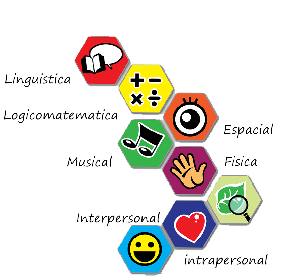
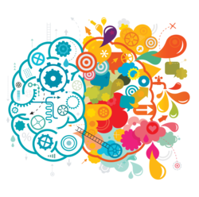
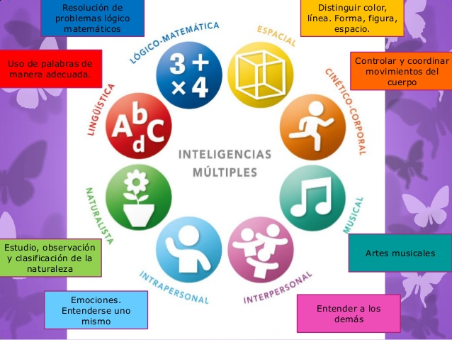

Los 8 Tipos De Inteligencias Múltiples de Gardner
Inteligencia lingüística
La capacidad de dominar el lenguaje y poder comunicarnos con los demás es transversal
a todas las culturas. Desde pequeños aprendemos a usar el idioma materno para podernos
comunicar de manera eficaz. no solo hace referencia a la habilidad para la comunicación oral,
sino a otras formas de comunicarse como la escritura, la gestualidad, etc.
Inteligencia lógico-matemática
Durante décadas, la inteligencia lógico-matemática fue considerada la inteligencia en bruto.
Suponía el axis principal del concepto de inteligencia, y se empleaba como baremo para
detectar cuán inteligente era una persona.
Como su propio nombre indica, este tipo de inteligencia se vincula a la capacidad para
el razonamiento lógico y la resolución de problemas matemáticos. La rapidez para solucionar
este tipo de problemas es el indicador que determina cuánta inteligencia lógico-matemática se tiene.
Los célebres test de cociente intelectual (IQ) se fundamentan en este tipo de inteligencia y,
en menor medida, en la inteligencia lingüística. Los científicos, economistas, académicos,
ingenieros y matemáticos suelen destacar en esta clase de inteligencia. Asimismo, los
ajedrecistas también requieren de capacidad lógica para desarrollar estrategias de juego mejores
a las de su oponente, y a su vez anticipar sus movimientos.
Inteligencias Espacial
También conocida como inteligencia visual-espacial, es la habilidad que nos permite observar
el mundo y los objetos desde diferentes perspectivas.
En esta inteligencia destacan los ajedrecistas y los profesionales de las artes visuales
(pintores, diseñadores, escultores…), así como los taxistas, que deben poseer un exquisito
mapa mental de las ciudades por las que transitan.
Inteligencia musical
La música es un arte universal. Todas las culturas tienen algún tipo de música, más o menos
elaborada, lo cual lleva a Gardner y sus colaboradores a entender que existe una inteligencia
musical latente en todas las personas.
Algunas zonas del cerebro ejecutan funciones vinculadas con la interpretación y composición
de música. Como cualquier otro tipo de inteligencia, puede entrenarse y perfeccionarse.
Inteligencia corporal y cinestésica
Las habilidades corporales y motrices que se requieren para manejar herramientas o para expresar
ciertas emociones representan un aspecto esencial en el desarrollo de todas las culturas de la historia.
La habilidad para usar herramientas es considerada inteligencia corporal cinestésica. Por otra parte,
hay un seguido de capacidades más intuitivas como el uso de la inteligencia corporal para expresar
sentimientos mediante el cuerpo.
Inteligencia intrapersonal
La inteligencia intrapersonal refiere a aquella inteligencia que nos faculta para comprender y controlar el
ámbito interno de uno mismo en lo que se refiere a la regulación de las emociones y del foco atencional.
Las personas que destacan en la inteligencia intrapersonal son capaces de acceder a sus sentimientos y
emociones y reflexionar sobre estos elementos. Según Gardner, esta inteligencia también permite ahondar
en su introspección y entender las razones por las cuales uno es de la manera que es.
Por otro lado, tanto saber distanciarse de la situación para desdramatizar eventos con un impacto emocional
negativo como saber identificar los propios sesgos de pensamiento son herramientas muy útiles tanto para
mantener un buen nivel de bienestar como para rendir mejor en diferentes aspectos de la vida.
Inteligencia interpersonal
La inteligencia interpersonal nos faculta para poder advertir cosas de las otras personas más allá de lo que
nuestros sentidos logran captar. Se trata de una inteligencia que permite interpretar las palabras o gestos,
o los objetivos y metas de cada discurso. Más allá de el contínuum Introversión-Extraversión, la inteligencia
interpersonal evalúa la capacidad para empatizar con las demás personas.
Los Tipos de Inteligencias Multiples



Enlaces de interés
Videos
Inteligencias Múltiples (56 actividades para desarrollarlas)
Cómo enseñar a hablar a un bebé -Trucos, consejos y recomendaciones | BabyPlaza
Referencias textuales
Inteligencias Múltiples de Howard Gardner
Biografía Howard Gardner